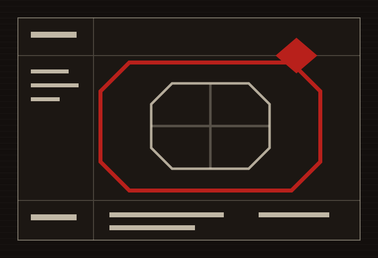
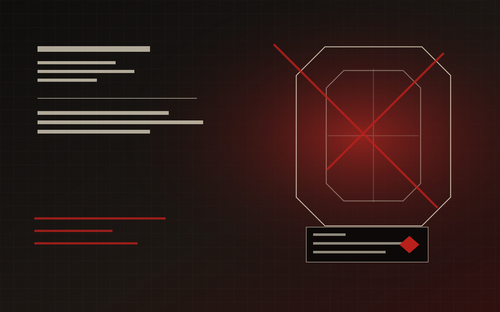
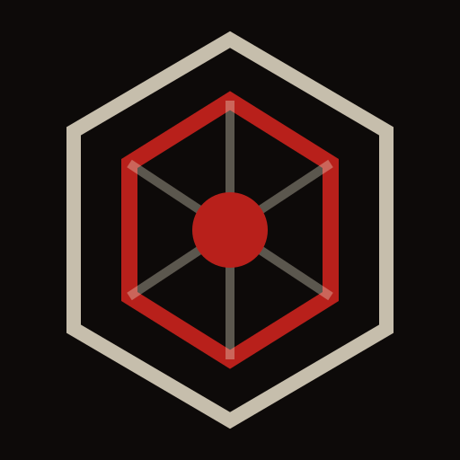

Produit principal
Aegis
La ligne active. Moderation, anti-raid, surveillance serveur, logs avances, OSINT legal et assistants de gestion.
Abyss file AC-001 / private digital company
Une marque de projets numeriques sombre et methodique. Abyss Company rassemble les outils, dossiers et interfaces qui doivent etre presentes, archives et suivis sans bruit inutile.
Identite
Abyss Company fonctionne comme une facade centrale : un nom, une direction graphique, une logique de dossiers et une maniere de signer les projets sans tout exposer d'un coup.
Le site sert de portfolio d'entreprise : il montre ce qui existe, ce qui avance, ce qui reste en recherche, et les lignes de service qui composent l'ecosysteme Abyss.
Portfolio

Produit principal
La ligne active. Moderation, anti-raid, surveillance serveur, logs avances, OSINT legal et assistants de gestion.

Recherche
La partie experimentation. Elle sert a tester les assistants, la memoire locale et les pistes IA avant publication.

Studio interne
La ligne site, portfolio, pages publiques, documentation, changelog et interfaces de presentation.
Produit principal
Aegis est la ligne la plus avancee d'Abyss Company : un projet de defense, de moderation, de surveillance et de suivi pour garder un espace mieux tenu.
Un socle defensif pour limiter les abus, surveiller les evenements et reagir vite.
Des commandes staff et wishlist pour gerer les sanctions, le vocal, les salons et les situations sensibles.
Une logique de traces et de suivi pour comprendre ce qui se passe dans un serveur.
Des fiches et recherches publiques encadrees, pensees pour la prevention et l'audit autorise.
Services
Moderation, anti-raid, logs, surveillance, commandes reservees et workflows staff.
Scans defensifs, reputation, IOC, privacy lab et sensibilisation a l'exposition publique.
Oracle et Aegis Dev servent de base pour la memoire, l'aide projet et les reponses structurees.
Sites statiques, pages projet, documentation publique et identite visuelle Abyss.
Changelogs, roadmaps, dossiers, incidents, notes et tableaux de suivi.
Direction graphique, sigils, dossiers visuels, ton public et coherence des produits.
Project roadmap
Stabiliser la moderation, les logs, la surveillance et les commandes reservees.
Garder les essais IA en reserve jusqu'a ce qu'ils meritent d'etre montres.
Renforcer le portfolio, les pages projet et le changelog public.
Clarifier les usages, permissions, limites legales et prochaines versions.
Changelog
Recentrage du site sur Aegis, Oracle et Abyss Web. Nettoyage des anciennes lignes separees.
Ajout des pages Abyss, Aegis, Changelog et Contact. Navigation complete.
Recentrage sur la marque, ajout des dossiers projets et nettoyage du ton public.
Contact
Les acces publics seront ajoutes quand ils auront une vraie raison d'etre la. Pour l'instant, le site sert de point d'entree officiel.